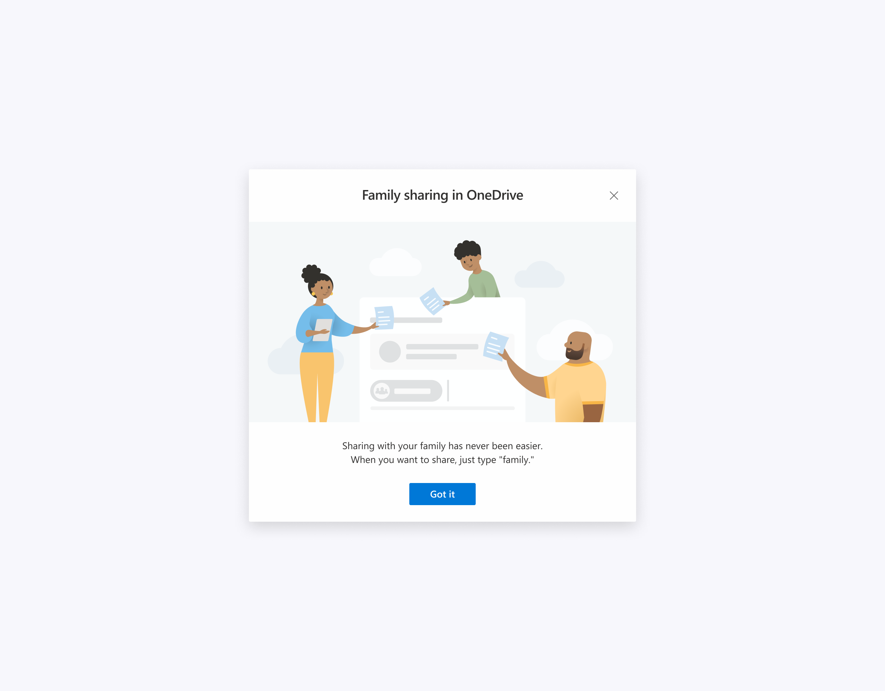
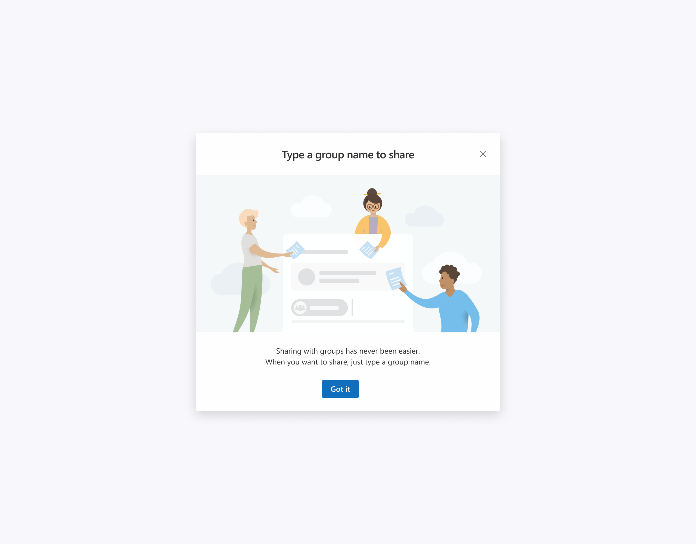
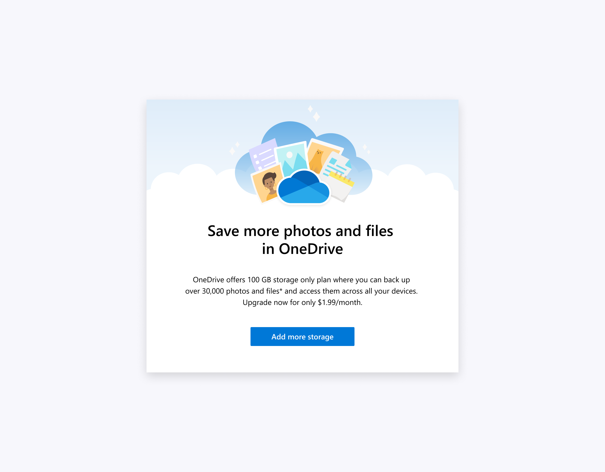

First-run experience (FRE) is an introduction to a new feature helping to shape the user's impression and influence their likelihood to come back.
When OneDrive introduced family and groups sharing capabilities, I worked on FREs for these features.
  I also worked on the "Save more photos and files in OneDrive" email campaign promoting our premium features.
Thanks for checking out!